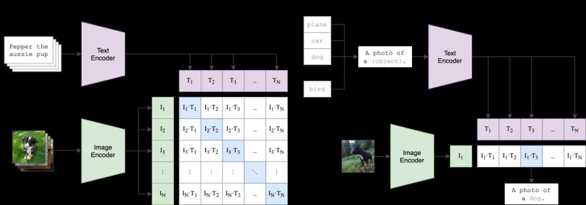

CLIP · ViT image tower + GPT-style text tower · shared 512-d embedding · symmetric InfoNCE
CLIP is a dual-encoder model: a ViT maps images to vectors, a causal Transformer maps text to vectors, and both live in the same L2-normalised space. Training pulls matching image–caption pairs together and pushes non-matches apart with symmetric InfoNCE (image→text and text→image cross-entropy on a B×B similarity matrix).
At inference you get zero-shot classification, retrieval, and semantic search — no class head retraining, just new text prompts like a photo of a dog.
What's different about this stop
- Prior LM stops (01–02) are single-tower language models — one decoder stack, one loss (next-token CE).
- CLIP is two towers: a ViT image encoder and a GPT-style text encoder. They never share weights.
- The loss is contrastive, not generative — push matched (image, text) pairs together and pull unmatched pairs apart.
- Both towers share the same building blocks (
LayerNormalization,MultiHeadAttention,FeedForward,TransformerBlock) — the only difference is how they read the sequence out (last token vs CLS token) and whether a causal mask is applied.
CLIPConfig — one dataclass for both modalities
What's new vs LM stops
- Previous stops had a single block of hyper-params (dmodel, N, H, vocab, seq_len). CLIP splits them into shared, image-only, and text-only groups.
embed_dimis new — this is the contrastive space both towers project into. It is smaller thandmodel(32 vs 64 here).num_patchesis a derived property, not a raw hyper-param — it is computed fromimage_sizeandpatch_sizeautomatically.
CLIPConfig is a single @dataclass that the shared building blocks, text encoder, and image encoder all read from. Teaching code uses tiny tensors; production ViT-B/32 scale is listed below.
CLIP ViT-B/32 (paper scale)
Image encoderViT-B/32 · 224×224 · patch 32 · 12 layers · width 768 · 12 headsText encoderGPT-style · 12 layers · width 512 · 8 heads · context 77embed_dim512 — shared projection dimension Dlogit_scaleLearned τ — init ≈ log(1/0.07)LossSymmetric InfoNCE on B×B cosine similarities14@dataclass
15class CLIPConfig:
16 # --- shared transformer params ---
17 dmodel: int = 64 # hidden dim for both encoders (must be divisible by H)
18 H: int = 8 # number of attention heads → dk = dmodel/H = 8
19 N: int = 2 # number of transformer blocks in each encoder
20 dff: int = 256 # feedforward inner dim — CLIP paper uses 4 × dmodel
21 dropout: float = 0.1
22 norm_eps: float = 1e-7
23 embed_dim: int = 32 # final joint embedding dim — both encoders project here
24 B: int = 2 # batch size (image-text pairs per step)
25
26 # --- image encoder ---
27 image_size: int = 32 # image H = W (kept small for learning)
28 patch_size: int = 8 # each patch is patch_size × patch_size pixels
29 C: int = 3 # 3 colour channels (RGB)
30
31 # --- text encoder ---
32 vocab_size: int = 1000 # text vocabulary size
33 max_text_len: int = 16 # max tokens per sentence
34
35 @property
36 def dk(self):
37 # per-head key/query/value dimension
38 return self.dmodel // self.H
39
40 @property
41 def num_patches(self):
42 # image is divided into a grid of patches
43 # e.g. 32×32 image with 8×8 patches → 4×4 grid → 16 patches
44 return (self.image_size // self.patch_size) ** 2
45
46
47config = CLIPConfig()
Manual LayerNorm with learnable scale and bias — no RMSNorm
CLIP vs LLaMA (stop 03)
- LLaMA dropped bias and mean-subtraction and used RMSNorm for speed. CLIP keeps full LayerNorm (mean, std, scale and bias) — matching the 2021 paper.
- The formula is
alpha * (x - mean) / (std + eps) + bias. Bothalphaandbiasarenn.Parameter. - The same class is used in both towers — shared, not duplicated.
LayerNormalization normalises over the last dimension (feature axis, size dmodel). mean and std are computed per token, per sample — shape (B, S, 1) with keepdim=True. After normalisation the learnable alpha (scale) and bias (shift) — both of shape (dmodel,) — let the model undo the normalisation if needed. The small eps (1e-7) prevents division by zero on dead activations.
54# z = alpha * (x - mean) / (std + eps) + bias
55class LayerNormalization(nn.Module):
56 def __init__(self, config):
57 super().__init__()
58 self.eps = config.norm_eps
59 self.alpha = nn.Parameter(torch.ones(config.dmodel)) # learnable scale
60 self.bias = nn.Parameter(torch.zeros(config.dmodel)) # learnable shift
61
62 def forward(self, x):
63 mean = x.mean(dim=-1, keepdim=True)
64 std = x.std(dim=-1, keepdim=True)
65 return self.alpha * ((x - mean) / (std + self.eps)) + self.bias
66
67
68layerNormLayer = LayerNormalization(config)
69x = torch.randn(config.B, config.max_text_len, config.dmodel)
70print("LayerNormalization output shape:", layerNormLayer(x).shape)
LLaMA removed the mean subtraction and bias entirely. Only scale, computed from RMS.
1class RMSNorm(nn.Module):
2 def forward(self, x):
3 # no mean subtraction, no bias
4 rms = torch.rsqrt(x.pow(2).mean(dim=-1, keepdim=True) + self.eps)
5 return x * rms * self.gamma
Self-attention only — optional causal mask, no cross-attention
CLIP vs prior stops
- Original Transformer (stop 01) had both self-attention and cross-attention. CLIP only needs self-attention — Q, K, V all come from the same input
x. - The
maskargument is optional. PassingNonegives full bidirectional attention (used for image patches). Passing the lower-triangular matrix gives causal attention (used for text tokens). - No GQA, no RoPE, no bias=False rule — this is vanilla MHA matching the 2021 CLIP paper.
Input x is shape (B, S, dmodel). All three projections wq, wk, wv map it to (B, S, dmodel), then .view(...).transpose(1,2) reshapes to (B, H, S, dk). The scores matrix is (B, H, S, S) — scaled by 1/√dk. When a causal mask is present, blocked positions get -inf so softmax outputs exactly 0 there. After softmax + dropout, multiply by values and fold heads back into (B, S, dmodel) via the output projection wo.
73class MultiHeadAttention(nn.Module):
74 # single input x — CLIP only uses self-attention (Q = K = V = x)
75 # supports optional causal mask for text encoder
76 def __init__(self, config):
77 super().__init__()
78 self.dmodel = config.dmodel
79 self.dk = config.dk
80 self.h = config.H
81 self.wq = nn.Linear(self.dmodel, self.dmodel)
82 self.wk = nn.Linear(self.dmodel, self.dmodel)
83 self.wv = nn.Linear(self.dmodel, self.dmodel)
84 self.wo = nn.Linear(self.dmodel, self.dmodel)
85 self.dropout = nn.Dropout(p=config.dropout)
86
87 def forward(self, x, mask=None):
88 # x: (B, S, dmodel)
89 B, S, _ = x.shape
90 query = self.wq(x) # (B, S, dmodel)
91 key = self.wk(x) # (B, S, dmodel)
92 value = self.wv(x) # (B, S, dmodel)
93
94 # split into H heads: (B, S, dmodel) → (B, H, S, dk)
95 query = query.view(B, S, self.h, self.dk).transpose(1, 2)
96 key = key.view(B, S, self.h, self.dk).transpose(1, 2)
97 value = value.view(B, S, self.h, self.dk).transpose(1, 2)
98
99 # scaled dot-product attention: (B, H, S, S)
100 attn_score = query @ key.transpose(-1, -2) / math.sqrt(self.dk)
101
102 if mask is not None:
103 # lower-triangular mask: 0 = blocked, fill with -inf → 0 after softmax
104 attn_score = attn_score.masked_fill(mask[:S, :S] == 0, float("-inf"))
105
106 attn_score = F.softmax(attn_score, dim=-1)
107 attn_score = self.dropout(attn_score)
108
109 # (B, H, S, S) @ (B, H, S, dk) → (B, H, S, dk) → (B, S, dmodel)
110 out = attn_score @ value
111 out = out.transpose(1, 2).contiguous().view(B, S, self.dk * self.h)
112 return self.wo(out)
mask[:S, :S] — slicing to :S is important. The causal mask is precomputed for max_text_len × max_text_len but the actual sequence may be shorter. Slicing trims it to the live sequence length automatically.
GELU activation — two linear layers, no gating
CLIP vs LLaMA SwiGLU (stop 03)
- LLaMA uses SwiGLU: three weight matrices, a SiLU gate, and no bias. CLIP uses a simpler two-layer GELU FFN with biases — the same as GPT-2 (stop 02).
- The pattern is
dmodel → dff → GELU → dropout → dmodel.dff = 4 × dmodelfollowing the original Transformer ratio. - Dropout is placed after GELU and before the projection — this is the standard pre-2022 placement.
w_up expands from dmodel to dff. F.gelu is applied (smooth, non-zero gradient everywhere unlike ReLU). Dropout is applied before w_proj projects back down to dmodel. This same FeedForward module is reused inside TransformerBlock for both the image and text tower.
120class FeedForward(nn.Module):
121 # CLIP uses GELU activation (smoother than ReLU — better gradient flow)
122 # dmodel → dff → GELU → dropout → dmodel
123 def __init__(self, config):
124 super().__init__()
125 self.w_up = nn.Linear(config.dmodel, config.dff)
126 self.w_proj = nn.Linear(config.dff, config.dmodel)
127 self.dropout = nn.Dropout(config.dropout)
128
129 def forward(self, x):
130 x = self.w_up(x)
131 x = self.dropout(F.gelu(x)) # GELU then dropout
132 x = self.w_proj(x)
133 return x
1class SwiGLUFeedForward(nn.Module):
2 def __init__(self, config):
3 self.w1 = nn.Linear(config.dmodel, config.dff, bias=False) # gate
4 self.w2 = nn.Linear(config.dmodel, config.dff, bias=False) # up
5 self.w3 = nn.Linear(config.dff, config.dmodel, bias=False) # down
6 def forward(self, x):
7 return self.w3(F.silu(self.w1(x)) * self.w2(x))
Pre-norm residual — shared by image and text towers
Same as GPT-2 (stop 02)
- Pre-norm:
x = x + sublayer(norm(x))— LayerNorm comes before each sub-layer, matching GPT-2. - The original Transformer (stop 01) used post-norm:
x = norm(x + sublayer(x)). Pre-norm is more training-stable. - This block is instantiated
Ntimes for the text encoder andNtimes for the image encoder — same Python class, different instances.
TransformerBlock owns two LayerNormalization instances (norm1 before attention, norm2 before FFN), one MultiHeadAttention, and one FeedForward. The forward applies them as two residual sub-layers. The optional mask is passed straight through to mha — if None, attention is bidirectional (image); if a lower-triangular matrix, attention is causal (text).
141class TransformerBlock(nn.Module):
142 # CLIP uses pre-norm: LayerNorm BEFORE each sublayer
143 # pre-norm: x = x + sublayer(norm(x)) ← used here
144 # post-norm: x = norm(x + sublayer(x)) ← used in transformer.py
145 # pre-norm is more stable for deeper networks
146 def __init__(self, config):
147 super().__init__()
148 self.norm1 = LayerNormalization(config) # before self-attention
149 self.norm2 = LayerNormalization(config) # before feedforward
150 self.mha = MultiHeadAttention(config)
151 self.ff = FeedForward(config)
152
153 def forward(self, x, mask=None):
154 # pre-norm → self-attention → residual
155 x = x + self.mha(self.norm1(x), mask)
156 # pre-norm → feedforward → residual
157 x = x + self.ff(self.norm2(x))
158 return x
GPT-style causal stack → last-token readout → projection
vs GPT-2 (stop 02)
- GPT-2 returns logits over the whole vocabulary for every position.
TextEncoderignores all positions except the last one — that token has attended to the entire prefix, so it's a sentence summary vector. - GPT-2's positional embedding is
nn.Embedding(integer → vector). CLIP uses a rawnn.Parameterof shape(1, max_text_len, dmodel)— same concept, directly a learnable matrix, broadcast over batch. - The output is projected from
dmodel → embed_dim(no bias) into the contrastive space. GPT-2 has no such projection.
Input tokens are shape (B, S) integers. wte maps them to (B, S, dmodel) and wpe adds learned position vectors (the single leading 1 broadcasts over the batch). After dropout, N causal TransformerBlocks are applied with the lower-triangular mask registered as a buffer. A final LayerNorm is applied, then x[:, -1, :] selects the last-position hidden state (shape (B, dmodel)) and proj converts it to (B, embed_dim).
175class TextEncoder(nn.Module):
176 def __init__(self, config):
177 super().__init__()
178 self.wte = nn.Embedding(config.vocab_size, config.dmodel)
179 # learnable positional embedding — shape (1, max_text_len, dmodel)
180 # the 1 in batch dim broadcasts over any batch size automatically
181 self.wpe = nn.Parameter(torch.randn(1, config.max_text_len, config.dmodel))
182 self.drop = nn.Dropout(config.dropout)
183 self.blocks = nn.ModuleList([TransformerBlock(config) for _ in range(config.N)])
184 self.norm = LayerNormalization(config)
185 # project from dmodel → embed_dim (shared contrastive space)
186 self.proj = nn.Linear(config.dmodel, config.embed_dim, bias=False)
187
188 # causal mask: lower-triangular (1=attend, 0=blocked)
189 # register_buffer: not a parameter, but moves to GPU with the model
190 self.register_buffer(
191 "mask", torch.tril(torch.ones(config.max_text_len, config.max_text_len))
192 )
193
194 def forward(self, x):
195 # x: (B, S) — integer token ids
196 x = self.wte(x) + self.wpe # (B, S, dmodel) — token + position
197 x = self.drop(x)
198
199 for block in self.blocks:
200 x = block(x, self.mask) # causal mask — each token sees only past tokens
201
202 x = self.norm(x) # (B, S, dmodel)
203 x = x[:, -1, :] # last token has attended to whole sentence → (B, dmodel)
204 return self.proj(x) # (B, embed_dim)
Conv2d stride trick — one step splits and projects the image
Completely new — no equivalent in LM stops
- Language stops input token IDs (integers). The image encoder inputs a float tensor
(B, C, H, W). - A
Conv2dwithkernel_size = stride = patch_sizeproduces non-overlapping patches. Each patch becomes onedmodel-dimensional token. - Two reshaping ops —
flatten(2)thentranspose(1,2)— convert the spatial grid into a sequence of patch tokens.
A 32×32 RGB image with patch_size=8 produces a 4×4 = 16-patch grid. After Conv2d, shape is (B, dmodel, 4, 4). flatten(2) merges spatial dims: (B, dmodel, 16). transpose(1,2) reorders to (B, 16, dmodel) — now it looks exactly like a sequence of 16 word-like tokens. No bias on the conv — the positional embedding added later in ImageEncoder plays the role of bias.
223class PatchEmbedding(nn.Module):
224 # splits image into non-overlapping patches and projects each to dmodel
225 # Conv2d with kernel=patch_size, stride=patch_size does both in one step
226 # Input: (B, C, image_size, image_size)
227 # Output: (B, num_patches, dmodel)
228 def __init__(self, config):
229 super().__init__()
230 self.proj = nn.Conv2d(
231 in_channels = config.C,
232 out_channels = config.dmodel,
233 kernel_size = config.patch_size, # same as stride — no overlap
234 stride = config.patch_size,
235 bias = False
236 )
237
238 def forward(self, x):
239 # x: (B, C, H, W)
240 x = self.proj(x) # (B, dmodel, grid_h, grid_w) — e.g. (2, 64, 4, 4)
241 x = x.flatten(2) # (B, dmodel, num_patches) — flatten spatial dims
242 x = x.transpose(1, 2) # (B, num_patches, dmodel) — tokens × features
243 return x
CLS token prepend, learned positions, full bidirectional attention, CLS readout
Completely new — no equivalent in LM stops
- A learnable CLS token is prepended to the patch sequence. After the transformer, the CLS position at index 0 has attended to every patch — it becomes the image summary vector.
- Positional embedding is a 2D
nn.Parameterof shape(1, num_patches+1, dmodel). The +1 accounts for the CLS slot at position 0. - No causal mask — every patch is allowed to attend to every other patch. Images have no left-to-right ordering.
- Same final structure as TextEncoder: one LayerNorm after the stack, then a linear projection into
embed_dim.
cls_token is (1, 1, dmodel). expand(B, -1, -1) replicates it for the whole batch without copying the memory. torch.cat([cls, x], dim=1) inserts it at position 0, giving a sequence of length num_patches + 1. Learnable pos_embed is added to the whole sequence including CLS. After N unmasked blocks, position 0 of the output (x[:, 0, :]) is the image embedding.
252class ImageEncoder(nn.Module):
253 def __init__(self, config):
254 super().__init__()
255 self.patch_embed = PatchEmbedding(config)
256
257 # CLS token: learnable vector prepended to patches
258 # after the transformer, CLS at position 0 aggregates all patch info
259 self.cls_token = nn.Parameter(torch.randn(1, 1, config.dmodel))
260
261 # positional embedding: num_patches + 1 (the +1 is for CLS at position 0)
262 self.pos_embed = nn.Parameter(torch.randn(1, config.num_patches + 1, config.dmodel))
263
264 self.dropout = nn.Dropout(config.dropout)
265 self.blocks = nn.ModuleList([TransformerBlock(config) for _ in range(config.N)])
266 self.norm = LayerNormalization(config)
267 # project from dmodel → embed_dim (same shared space as text encoder)
268 self.proj = nn.Linear(config.dmodel, config.embed_dim, bias=False)
269
270 def forward(self, x):
271 B = x.shape[0]
272 x = self.patch_embed(x) # (B, num_patches, dmodel)
273
274 # expand CLS token for the whole batch then prepend at position 0
275 cls = self.cls_token.expand(B, -1, -1) # (B, 1, dmodel)
276 x = torch.cat([cls, x], dim=1) # (B, num_patches+1, dmodel)
277
278 # add positional embedding — tells model where each patch sits in the grid
279 x = x + self.pos_embed # (B, num_patches+1, dmodel)
280 x = self.dropout(x)
281
282 # full attention — no causal mask (every patch can attend to every other)
283 for block in self.blocks:
284 x = block(x, mask=None)
285
286 x = self.norm(x)
287
288 # CLS token (position 0) has attended to all patches → image summary
289 cls_out = x[:, 0, :] # (B, dmodel)
290 return self.proj(cls_out) # (B, embed_dim)
Symmetric InfoNCE — push diagonal, pull off-diagonal
Completely new vs all LM stops
- All prior stops use cross-entropy on next-token logits — shape
(B·S, vocab), one correct class per position. - CLIP's logits are shape
(B, B)— every image against every text in the batch. The correct pairs are on the diagonal. - Loss is computed twice and averaged: row-wise CE (each image should match its caption) and column-wise CE (each caption should match its image). That symmetry is why it's called "symmetric".
labels = torch.arange(B) means row 0 should peak at column 0, row 1 at column 1, etc. — the identity permutation. F.cross_entropy(logits, labels) treats each row as a distribution and penalises deviation from the diagonal. F.cross_entropy(logits.T, labels) does the same column-wise. Dividing by 2 gives the final scalar loss.
307class CLIPLoss(nn.Module):
308 def __init__(self):
309 super().__init__()
310
311 def forward(self, logits):
312 B = logits.shape[0]
313 # labels = [0, 1, ..., B-1] — correct match for row i is column i
314 labels = torch.arange(B, device=logits.device)
315 # image → text: each row should peak at column i
316 loss_img_to_txt = F.cross_entropy(logits, labels)
317 # text → image: each column should peak at row i (transpose)
318 loss_txt_to_img = F.cross_entropy(logits.T, labels)
319 return (loss_img_to_txt + loss_txt_to_img) / 2
Two towers, L2 norm, learned temperature, B×B logits
What's unique about CLIP's forward pass
- L2 normalisation after both encoders:
F.normalize(..., dim=-1)puts every embedding on the unit sphere, soimg @ txt.Tgives cosine similarity, not dot product. - logit_scale (learned temperature) is stored as
log(1/0.07)and recovered via.exp()— this keeps the value always positive without a clamp. The init value≈ 14.3sharpens the distribution significantly. - The model exposes separate
encode_imageandencode_textmethods for zero-shot inference without rerunning the full forward.
CLIP.__init__ owns img_encoder, text_encoder, a scalar logit_scale parameter, and a CLIPLoss instance. In forward, both features are L2-normalised independently, then scaled by exp(logit_scale) and matrix-multiplied to produce the (B, B) similarity matrix. The loss is computed from that matrix and returned alongside it.
339class CLIP(nn.Module):
340 def __init__(self, config):
341 super().__init__()
342 self.img_encoder = ImageEncoder(config)
343 self.text_encoder = TextEncoder(config)
344
345 # temperature: scales similarities before softmax
346 # learned in log space → exp() keeps it always positive
347 # init to log(1/0.07) ≈ 2.66 from the CLIP paper → exp ≈ 14.3
348 self.logit_scale = nn.Parameter(torch.tensor(math.log(1 / 0.07)))
349 self.loss_fn = CLIPLoss()
350
351 def encode_image(self, images):
352 # encode + L2-normalize → ready for cosine similarity
353 return F.normalize(self.img_encoder(images), dim=-1)
354
355 def encode_text(self, tokens):
356 # encode + L2-normalize → ready for cosine similarity
357 return F.normalize(self.text_encoder(tokens), dim=-1)
358
359 def forward(self, images, tokens):
360 img_feat = self.img_encoder(images) # (B, embed_dim)
361 txt_feat = self.text_encoder(tokens) # (B, embed_dim)
362
363 # L2-normalize: makes dot product equal to cosine similarity
364 img_feat = F.normalize(img_feat, dim=-1)
365 txt_feat = F.normalize(txt_feat, dim=-1)
366
367 # scale by temperature (always positive via exp)
368 scale = self.logit_scale.exp()
369 logits = scale * img_feat @ txt_feat.T # (B, B) similarity matrix
370
371 loss = self.loss_fn(logits)
372 return logits, loss
373
379clip_model = CLIP(config)
380images = torch.randn(config.B, config.C, config.image_size, config.image_size)
381tokens = torch.randint(0, config.vocab_size, (config.B, config.max_text_len))
383logits, loss = clip_model(images, tokens)
384print("CLIP logits shape:", logits.shape) # (B, B) = (2, 2)
385print("CLIP loss: ", loss.item())
387total_params = sum(p.numel() for p in clip_model.parameters())
388print("Total parameters:", total_params)
Encode once, compare with any labels — no retraining needed
Why zero-shot works
- Both encoders are trained to put matching (image, text) pairs close in the unit sphere. At inference time, you just provide new label strings — the model was never shown them explicitly.
- Use
encode_imageandencode_textseparately so the encoders are not called inside a full forward pass. Both methods include the L2 norm. - The classification score is a plain dot product after normalisation — no softmax needed, argmax gives the predicted class.

Left: batch contrastive training · Right: zero-shot via text prompts
One image is encoded to (1, embed_dim). Prompts like a photo of a {class} are tokenised to (num_classes, seq_len). img_feat @ txt_feats.T yields similarities; argmax picks the best-matching prompt — no fine-tuning on new labels.
403clip_model.eval()
404
405# one image
406image = torch.randn(1, config.C, config.image_size, config.image_size)
407
408# three candidate labels — random tokens as stand-in for real tokenised text
409label_tokens = torch.randint(0, config.vocab_size, (3, config.max_text_len))
410
411with torch.no_grad():
412 img_feat = clip_model.encode_image(image) # (1, embed_dim)
413 txt_feats = clip_model.encode_text(label_tokens) # (3, embed_dim)
414 similarities = img_feat @ txt_feats.T # (1, 3)
415 predicted = similarities.argmax()
416
417print("Similarities: ", similarities)
418print("Predicted label index:", predicted.item()) # 0, 1, or 2
CLIP vs the decoder-only LM stops
The transformer primitives are identical to the LM stops before this chapter. What changes is the architecture around them and the training objective.
| Axis | Decoder LM stops (01–02, 04–09) | CLIP (stop 03) |
|---|---|---|
| Number of towers | One | Two — image and text (no shared weights) |
| Inputs | Token IDs (B, S) | RGB images (B, C, H, W) + token IDs (B, S) |
| Position encoding | Sinusoidal / learned nn.Embedding / RoPE | Learned nn.Parameter matrix (text); learned 2D nn.Parameter (image) |
| Attention style | Causal only (decoder) | Causal for text tower; full bidirectional for image tower |
| Normalization | RMSNorm (LLaMA+) or LayerNorm | Manual LayerNorm with alpha and bias |
| FFN activation | ReLU / GELU / SwiGLU | GELU (2-layer, no gating) |
| Output readout | Every position → vocab logits | Last token (text) or CLS position 0 (image) → embed_dim vector |
| Training loss | Cross-entropy on next token | Symmetric InfoNCE on B×B similarity matrix |
| Temperature | None | Learned scalar logit_scale = log(1/0.07) |
| Inference | Autoregressive generation | Zero-shot: encode new label strings and take argmax |
Papers & technical sources
Primary reports and references for this chapter. Read these for full equations, training details, and official hyperparameters.
- Learning Transferable Visual Models From Natural Language Supervision (CLIP)Dual-tower contrastive pretraining — image + text encoders, InfoNCE loss.
- OpenAI CLIP blogHigh-level motivation and zero-shot classification results.
Comments